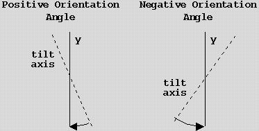

Overview
As the first step in EM tomographic image processing, BALIGN determines
the alignment of projections in a single-axis tilt series. It
uses high density fiducial markers in the projections as reference
points to register individual projections.
BALIGN is composed of four modules (programs):
- BEAD_FINDER
- Identifies bead-like features on each projection.
- BEAD_MATCHER
- Traces individual beads through all projections.
- BEAD_CHASER
- Digs out missing bead positions BEAD_FINDER did not find.
- BEAD_ALIGN
- Determines the alignment parameters by performing a least-squares
fit of the bead positions. There is both an interactive
and automatic mode; the interactive mode allows you to
edit the bead positions between rounds of fitting to more
easily address problems that can occur.
Topics
Overview |
User interface |
Recipe for use |
Troubleshooting |
Parameters
Related Priism Topics
Priism |
Bead finder |
Bead matcher |
Bead chaser |
Bead align |
Bead align (interactive) |
Bead list editor |
Reconstruction
- Each module corresponds to an independent program. So any
combination of the four modules can be run in a given execution (by
clicking the corresponding toggle buttons in the Master setup menu).
- When you change the content of a widget in a menu, the contents of
some other widgets in the menus downstream can change correspondingly.
- All the files will have the same base name as the IdatFile but use
their own standard extensions. For an optional file, there is a toggle
button on the right of the file name widget: with the toggle on, the
file is used and the name appears in the file name widget; with the
toggle off, the file is not used and 'none' appears in the file name
widget.
- The setup menu of each module has a submenu for special parameters.
The default values in this submenu are normally fine.
- When you click the DoIt button, a *.com file is created in the
same directory as the unaligned tilt series. The *.com file is executed
and generates a *.log file in the same directory. If you make the *.log
file name = 'none' in the Options submenu, the content of the *.log file
will be diverted to the screen. You will find this convenient for monitoring
the execution when you do troubleshooting or run BEAD_ALIGN interactively.
Topics
Overview |
User interface |
Recipe for use |
Troubleshooting |
Parameters
- Choose bead feature criteria for BEAD_FINDER.
The algorithm for finding beads is sensitive to the values for the
average bead radius,
bounds on the area of a bead,
the number of beads in a projection,
and how close the beads are to appearing
circular. It is convenient to do several runs of BEAD_FINDER using
just a subset of the projections (the parameter which sets the
projection index increment is an
easy way to do this).
- Create a list of bead-like features on potential reference
projections.
The reference bead list is one way to provide a starting point for
BEAD_MATCHER (see the description of BEAD_MATCHER's
iRefs input parameter for other
ways that can be used instead of or in combination with the reference
bead list). The reference bead list has the location of each bead that
is to be traced on one or more projections; a restriction is that the
bead positions on the same projection must be adjacent in the file.
The reference bead list can be created with BEAD_FINDER (just limit its
output to those projections which will be used as reference projections
and save the results with an .rbl extension) and edited with the
bead list editor (this is launched by selecting
Display: IrblFile from the pulldown in BALIGN's main menu) or
just created entirely by the bead list editor.
- (optional) Make a single bead list file.
If there are large shifts between neighboring projections or the
bead-like features chosen in step 2 are closely crowded so more
accurate shift parameters are needed when running BEAD_MATCHER,
create a *.sbl file by picking positions of a bead in all projections.
If there are only a few large shifts, it's only necessary to pick a
bead on projections around each large shift, and the beads for different
shifts do not have to be the same if the shifts are not adjacent.
- Run BEAD_FINDER and BEAD_MATCHER.
- Fix the results of BEAD_MATCHER for use in BEAD_ALIGN.
To use BEAD_ALIGN, you need to have at least four matched beads on each
projection. If the output of BEAD_MATCHER does not meet that criterion
(to see if this is the case, look at the BALIGN.log file or inspect
BEAD_MATCHER's result with the bead list editor by selecting
Display: slFile1 from BALIGN's main menu), then you can use
the bead list editor or BEAD_CHASER to fix the problem. In practice,
most users have done this interactively with the bead list editor rather than
with automated approach using BEAD_CHASER because they have not found
a set of parameters that prevents BEAD_CHASER from making several
mistakes in the positions it associates with each bead. Oftentimes, using
a single bead list with BEAD_MATCHER gives a good enough result
so no fixes are necessary and you can skip this step.
- Run BEAD_ALIGN.
Most users use the interactive version
of BEAD_ALIGN and adjust the found positions of the beads until an acceptable
fit is found.
Topics
Overview |
User interface |
Recipe for use |
Troubleshooting |
Parameters
BEAD_MATCHER does not match any beads on some projections
This problem frequently happens at high tilt angles. One possible
cause is that BEAD_FINDER did not find enough beads on the projection.
In that case, rerun BEAD_FINDER with less stringent criteria on the
affected projections and merge the results with the previous *.pl file
by using the Imerge_plfile option.
Another possible cause is that BEAD_MATCHER made a mistaken prediction of
the bead position or its criteria for assessing whether or not a bead matches
the prediction were overly stringent. For this, you can use more reference
projections (these are set by the BEAD_MATCHERS's
iRefs input parameter; you will likely
need to edit the *.pl file so the listed bead positions on the reference
projections only include those beads you want to match). If the projection
in question is not included in the single bead list (see step 3 in the
recipe for use for more details), you can add to
or create the single bead list so that it included bead positions on the
problem projection and the projections adjacent to it. To relax the matching
criteria, adjust BEAD_MATCHER's slop and
xyCrit input parameters.
BEAD_ALIGN has insufficient bead positions to continue
This can be either due to not enough beads on a section (4 is
the minimum) or not enough beads that are common to two different
sections. Using interactive BEAD_ALIGN to add bead positions is
the recommended solution.
Topics
Overview |
User interface |
Recipe for use |
Troubleshooting |
Parameters
The following parameters are set in BALIGN's main menu. The majority
of them are used in all of the alignment stages.
- IdatFile
- This is the name of the file containing the raw projection data stack
from the CCD (i.e. measured in terms of electron counts; data stacks
with the contrast inverted can not be handled).
- NX:NY:NV
- The first two values are, respectively, the x and y dimension of the
projections. The third value is the number of projections in the data
stack.
- interactive
- Selects the interactive mode of BEAD_ALIGN when on. The interactive
version has a graphical user interface to monitor the alignment and
can be used to add, correct, or delete bead positions by selecting
the beads in an image window.
- bead_radius
- This is the expected bead radius in pixels and is used for
finding bead-like features in BEAD_FINDER and BEAD_CHASER. To
specify this parameter from the command line use
-beadrad=r; the default value is 3.5 pixels.
- rot0
- Let the orientation angle be the smallest, in absolute value, rotation
angle needed to rotate the image so that the tilt axis is parallel to the
y axis (the y axis is vertical when images are displayed in Priism). The
orientation angle is positive if the corresponding rotation is clockwise
and is negative if the corresponding rotation is counterclockwise.

The first value in the rot0 field is the estimated orientation
angle, in degrees, at a tilt angle of zero. The second value is the
estimated difference, in degrees, between the orientation angle at a tilt
angle of sixty degrees and the orientation angle at a tilt angle of minus
sixty degrees. To specify these parameters from the command line, use
-rot0=o0:ochange. The
default value for o0 is 78 degrees; the default value for
ochange is -1 degrees. You should substitute values that
more accurately reflect what happens at the magnification used when
collecting the tilt series.
- resolution
- If the input data set has lower resolution versions
of the data available, you can use the resolution field to set which resolution
BEAD_FINDER and BEAD_CHASER use in their calculations. The resolutions are
numbered from zero with zero as the highest resolution and increasing values
correspond to decreasing resolution. You may want to use a lower resolution
for two reasons: for data with low signal-to-noise ratios using a lower
resolution may be necessary for BEAD_FINDER and BEAD_MATCHER to successfully
identify beads and using a lower resolution reduces that amount of computation
time needed. If your data set does not already have lower resolutions
available, you can append lower resolutions with
AppendRes (in AppendRes use one for the z scaling
since you do not want the lower resolutions to average different tilt angles).
To specify the resolution to use on the command line, use
-res=ires.
Topics
Overview |
User interface |
Recipe for use |
Troubleshooting |
Parameters